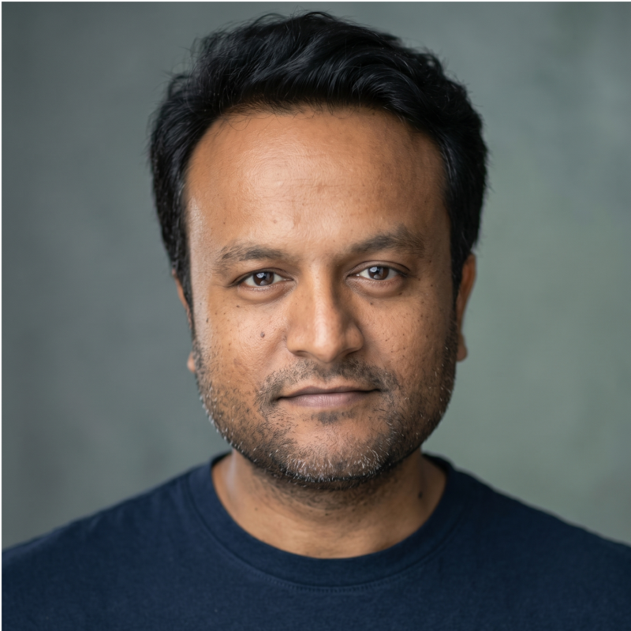

Lyft Level 5 — Head of Autonomy
I led on-vehicle perception and planning, including computer vision, prediction, motion planning, and infrastructure for deploying real-time deep learning models.
Co-founder & CEO, Coram
I work on AI, computer vision, and robotics. Previously, I was Head of Autonomy at Lyft and worked at Zoox. I received my PhD in Computer Science from Cornell University.
San Francisco Bay Area

I’m the co-founder and CEO of Coram, an AI-based physical security platform that combines video security, access control, and emergency management.
Coram has raised $66 million from investors including 8VC and Battery Ventures.
The platform works with existing cameras and uses AI to search video, detect events, and support investigations.
coram.aiI led on-vehicle perception and planning, including computer vision, prediction, motion planning, and infrastructure for deploying real-time deep learning models.
I worked at Zoox before joining Lyft’s self-driving program.
My research focused on machine learning, computer vision, and robotics. As a visiting research scholar at the Stanford AI Lab, I started the Brain4Cars and RoboBrain projects.
Ashesh Jain, Hema S Koppula, Shane Soh, Bharad Raghavan, Avi Singh, Ashutosh Saxena
2016 · arXiv [arXiv] [Code and Data set]
Ashesh Jain, Shikhar Sharma, Thorsten Joachims, Ashutosh Saxena
IJRR 2015 [PDF]
Ashesh Jain, Amir R. Zamir, Silvio Savarese, Ashutosh Saxena
CVPR 2016 (Full ORAL) (Best Student Paper) [PDF] [arXiv] [supplementary] [Code] [Video]
Ashesh Jain, Avi Singh, Hema S Koppula, Shane Soh, Ashutosh Saxena
Ashesh Jain, Hema S Koppula, Bharad Raghavan, Shane Soh, Ashutosh Saxena
ICCV 2015 [PDF] [Code and Data set] [arXiv]
Ashesh Jain, Shane Soh, Bharad Raghavan, Avi Singh, Hema S Koppula, Ashutosh Saxena
BayLearn Symposium 2015 [Extended abstract] (Full ORAL)
Ashesh Jain, Debarghya Das, Jayesh Gupta, Ashutosh Saxena
ICRA 2015 [PDF]
Ashutosh Saxena, Ashesh Jain, Ozan Sener, Aditya Jami, Dipendra K Misra, Hema S Koppula
ISRR 2015 [arXiv]
Hema S Koppula, Ashesh Jain, Ashutosh Saxena
ISER 2014 [PDF]
Ashesh Jain, Shikhar Sharma, Ashutosh Saxena
ISRR 2013 [PDF]
Ashesh Jain, Brian Wojcik, Thorsten Joachims, Ashutosh Saxena
NIPS 2013 [PDF]
Ashesh Jain, S. V. N. Vishwanathan, Manik Varma
PhD thesis · Cornell University · May 2016